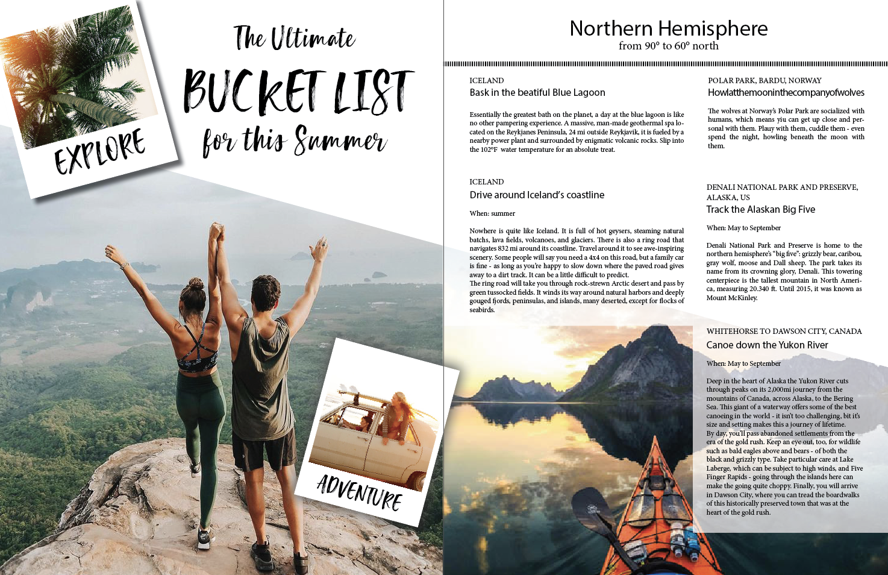
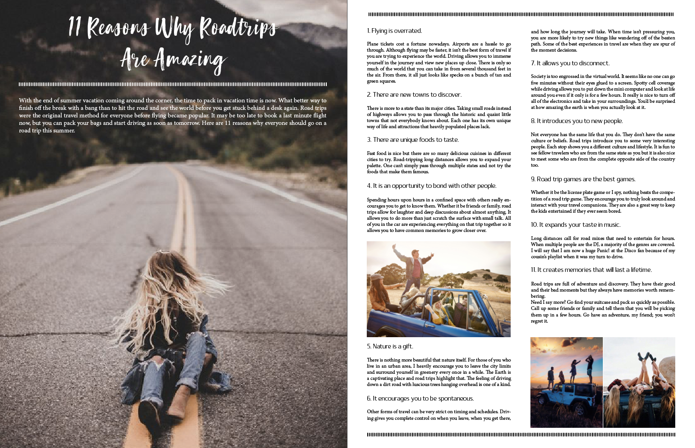
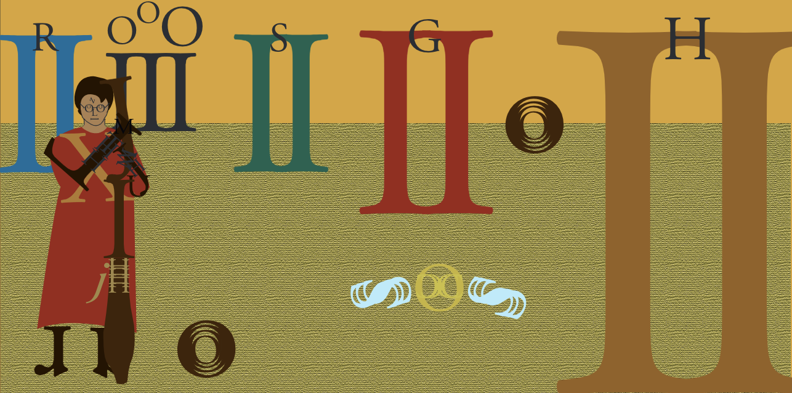
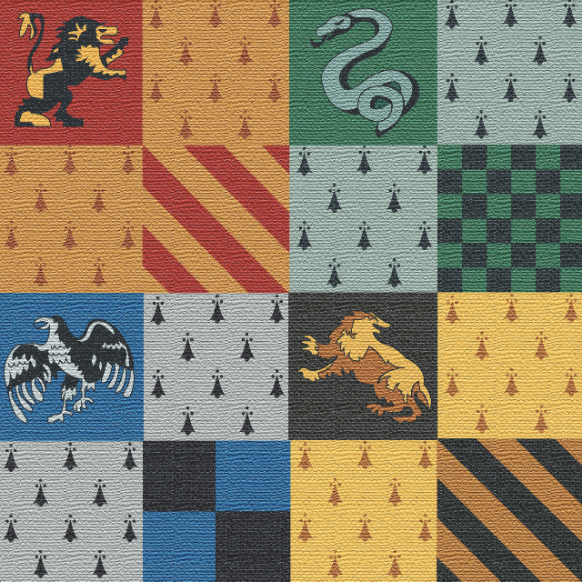

Tanja Moissl
Hi, my name is Tanja Moissl and I am from Munich, Germany. I'm currently a junior at the University of Miami, majoring in Advertising Management and minoring in marketing, French, and interactive media. After I graduate, I want to pursue a marketing career in the fashion industry and I already have internship experiences. Even though I am more interested in the business side of advertising, I love being creative and graphic design. This is my creative portfolio.
Welcome to my world!
My InDesign Magazine
Since one of my greatest passions is traveling, I didn't exacty have a hard time choosing what kind of magazine I wanted to do. With my travel magazine I intend to bring joy to young people like myself, who love to explore the world or just want some inspiration. As world travelers such as Jay Alvarez are all over youtube and the social media, I figured it would be a great idea to pick up on this trend. Hence the name "Wanderlust".
 My Illustrator Self Portrait
Drawing in Adobe Illustrator is by far one of the most challenging and time consuming things I've ever done, but I had a lot of fun working on this project. It gets addictive as you want to bring in as much detail as possible in order to make it even more realistic. I view it as an ongoing project.
My Illustrator Typeface Book
Since Garamond was used for the Harry Potter books and I'm a huge fan, I chose it as the theme for my typeface book and I had so much fun doing this assignment. I worked with the colors of the four Hogwarts houses and made the book cover and back look old by applying a filter. The illlustrations in the book mostly consists of letters as I wanted to showcase my font.
 My Photoshop Project
For this assignment we had to think out of the box. I wanted to do somthing that was somewhat related to Stranger Things so people would recognize it, but completely different at the same time. I ended up playing with the ideas of the upside-down and parallel worlds, hence the cosmic design. The retro colors are a hommage to the 1980's flair in the show.